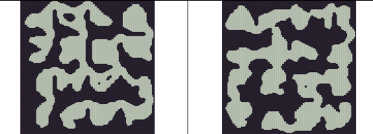
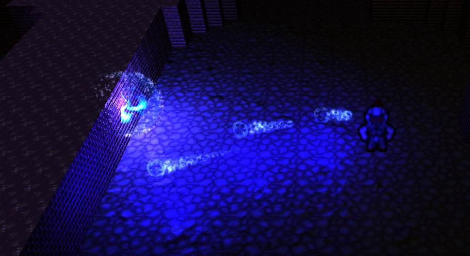
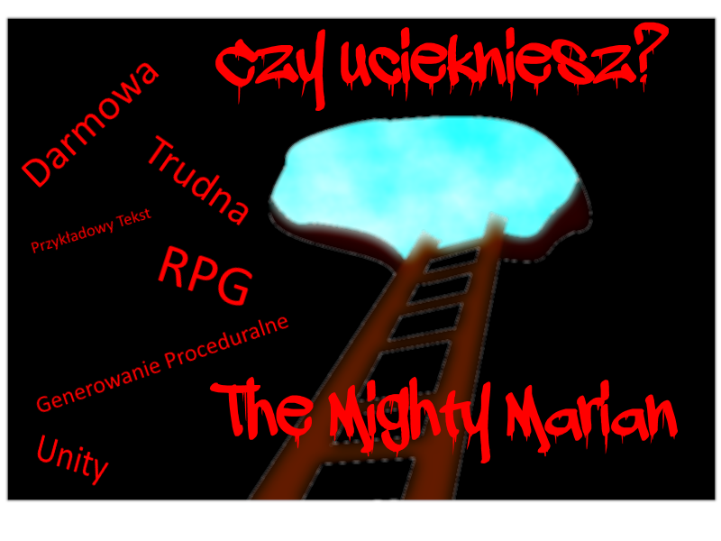

The Mighty Marian
10/10Filip Wąs, tester produkcji
To działaDominika Sokołowska, twórca gry
Doskonała produkcja, pełna wymagających przeciwników, z ciekawa mechaniką i bardzo przyjemną zręcznościową walkąKrzysztof Jasiak, twórca gry
O grze
Gracz wciela się w postać tytułowego Mariana, który został uwięziony w mrocznych lochach. Jego zadaniem jest wydostanie się na powierzchnię i pokonanie ostatecznego bossa. Podczas rozgrywki bohater, wiedziony tęsknotą za światłem słonecznym, zdobywa nowe przedmioty, odblokowuje umiejętności i zyskuje na sile. Ale wrogowie również nie próżnują, z każdym poziomem są silniejsi i jest ich coraz więcej.
Gatunek:
Survival/RPG z elementami Rougelike i gry zręcznościowej.Potencjalni odbiorcy:
Gra skierowana jest raczej do starszych odbiorców, powyżej czternastego roku życia, ze względu na wysoki poziom trudności i bardzo dynamiczną rozgrywkę. Ponieważ grafika gry utrzymana jest raczej w mrocznej i ciemnej kolorystyce, która nie będzie odpowiednia dla młodszych odbiorców. Mini gra, od której odbiorca zaczyna swoje doświadczenie z The Mighty Marian, nawiązuje to klasycznej produkcji Quake 3, co może pozostać niezauważone przez graczy młodszych. W grze pojawia się przemoc i dużo krwi.Cechy wyróżniające produkt
- Mapy generowane proceduralnie
- Permadeath – brak zapisu gry
- Wysoki poziom trudności
Główne Osiągnięcia
-
Lochy generowane proceduralnie

-
Dynamiczna, zręcznościowa walka

Kontakt
Media
Plakat
